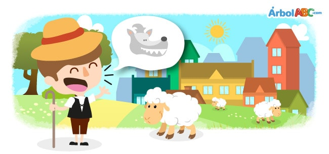

The Boy Who Cried Wolf

There was once a little shepherd taking care of his flock on the top of a hill. He was
very bored. To amuse himself he took a great breath and sang out, “Wolf! Wolf! The Wolf is chasing the
sheep!”
The villagers came running to help the little shepherd and drive away the wolf. But when
they reached the top of the hill they did not find any wolves. Instead, they found the little shepherd
laughing.
“Don't cry 'wolf when there's no wolf,” said the villagers and they left angry down the
hill.
After a few hours, the little shepherd, finding himself once again very bored, shouted,
“Wolf, wolf! There is a wolf chasing the sheep.”
The villagers ran again to help him, but seeing that there were no wolves, they told the
shepherd very angrily, “Don't cry wolf when there is no wolf. Do it only when a wolf is truly chasing the
sheep.”
Having tricked the villagers once again, the shepherd boy was rolling on the ground with
laughter as he watched the villagers go down the hill.
Later, the little shepherd saw a wolf near his flock. Scared, he shouted as loud as he
could.
“Wolf, wolf! There is a wolf chasing the sheep.”
But the villagers thought he was trying to trick them again, and this time they did not
come to his aid. The little shepherd cried inconsolably as he watched the wolf run away with all his sheep.
At dusk, the little shepherd returned to the village and told everyone, “The wolf a on
the hill and has taken all my sheep. Why did you not help me?”
Then, the villagers responded, “We would have helped you, just like we did before, but
nobody believes in a liar even when he is telling the truth.”
Moral: Do not count you chickens before they are hatched.
El niño que lloró lobo
Había una vez un pequeño pastor cuidando su rebaño en la cima de una colina. Él era
muy aburrido. Para divertirse, respiró hondo y cantó: «¡Lobo! ¡Lobo! El lobo persigue al
ovejas!
Los aldeanos llegaron corriendo para ayudar al pequeño pastor y ahuyentar al lobo. Pero cuando
Al llegar a la cima de la colina no encontraron ningún lobo. En cambio, encontraron al pequeño pastor
riendo.
"No llores lobo cuando no hay lobo", dijeron los aldeanos y se fueron enojados
colina.
Después de unas horas, el pequeño pastor, al encontrarse nuevamente muy aburrido, gritó:
“¡Lobo, lobo! Hay un lobo persiguiendo a las ovejas ".
Los aldeanos corrieron nuevamente para ayudarlo, pero al ver que no había lobos, le dijeron al
pastor muy enojado, "No llores lobo cuando no hay lobo. Hazlo solo cuando un lobo realmente persiga
ovejas ".
Después de haber engañado a los aldeanos una vez más, el pastorcillo estaba rodando por el suelo con
risa mientras veía a los aldeanos bajar la colina.
Más tarde, el pequeño pastor vio a un lobo cerca de su rebaño. Asustado, gritó tan fuerte como él
podría.
"¡Lobo, lobo! Hay un lobo persiguiendo a las ovejas ".
Pero los aldeanos pensaron que estaba tratando de engañarlos nuevamente, y esta vez no lo hicieron.
ven en su ayuda. El pequeño pastor lloró desconsolado mientras veía al lobo huir con todas sus ovejas.
Al anochecer, el pequeño pastor regresó a la aldea y les dijo a todos: "El lobo está en
La colina y se ha llevado todas mis ovejas. ¿Por qué no me ayudaste? ”
Luego, los aldeanos respondieron: “Te hubiéramos ayudado, como lo hicimos antes, pero
nadie cree en un mentiroso incluso cuando dice la verdad ".
Moral: Do not count you chickens before they are hatched.